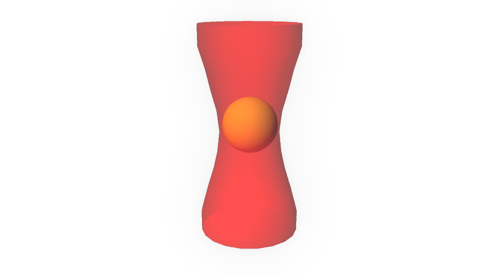
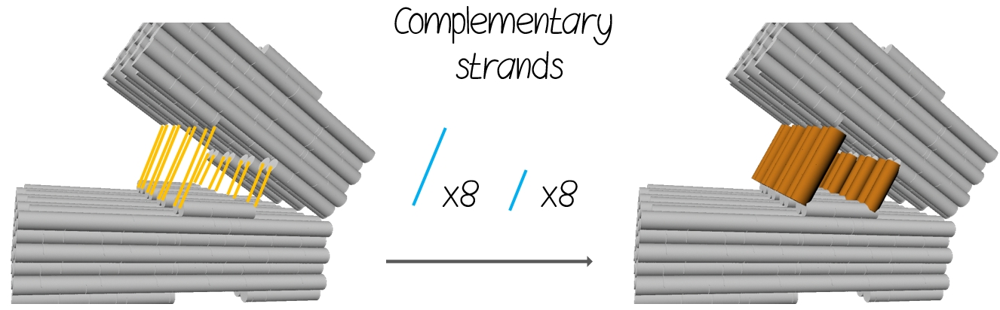

WIND UP THE GEAR
Hi! We are Team NanoGear NTU, a group of undergraduates from National Taiwan University in the annual biomolecular nanotechnology design competition, BIOMOD.
Welcome to the world of nano-gear. A breif short clip above will guide you along the way to explore our project in building up the nano-gear. From Brick monoer, dimer to gear, the process is not easy but enjoyable!
By watching a two and a half minutes video below will further explaining our project, and you may also visit our website to know the project in depth.
Hope you enjoy your visit, and you may contact us if you have any question and comment.
Project
Outline
- The advancement of DNA programmability provides an intelligent method called “DNA origami” enabling the scientists to bring their nanostructures’ blueprint into reality.
- We devise a DNA nano-gear set and utilize "optical tweezers," a highly focused laser beam that functions as a particle trap and force generator to drive rotation of our gear set.
- DNA possesses birefringence characteristic. The object with birefringence has refractive index difference in two different light propagating direction, resulting in an optical torque on the object that can drive the rotation of the object.
- Although many researches have reported different ways in driving DNA movement, each of them has its own limitation. Our motivation is to find an efficient and controllable method in triggering the movement of DNA in bio-machinery systems. We consider "optical tweezers" could be a great force generator.
Background
Nanoscale technology involves extremely tiny objects in the scale of nanometers. So far, it is still challenging to design a complicated nanosystem with applicable function. However, tackling tiny things no longer is a difficult task since new technique has been introduced. The advancement of DNA programmability provides an intelligent method called “DNA origami” enabling the scientists to bring their nanostructures’ blueprint into reality.
DNA origami is a powerful option in creating desiring nanostructures. This technique consists of two critical elements, DNA scaffold and staples. DNA scaffold is a circular single-stranded DNA which provides the frame for the folding structure. Staples are single-stranded oligonucleotides, diversing in length and sequence. Literally, their function is to “staple” the DNA scaffold into desiring shape. The firm linkage of DNA scaffold and staples are bound via the complementary base pairing, allowing them to form a strong hydrogen bonding that can hold the structure in shape. Therefore, the three-dimensional nanostructures can be a programmable design (Figure 1). As a result, numerous novel nanorobotic systems such as nano-calculators, nanomotors, DNA switches, drug-delivering robots, and nanorobot arms have been invented during the past decade.

Figure 1: Illustration of DNA origami and the functions of DNA scaffold and staples
To construct dynamic DNA devices, an energy input to generate mechanical forces is often needed. Recently, scientists utilize the property of DNA hybridization in DNA machines as a fuel. Thubagere et al. [1] developed a “DNA walker” to sort two types of molecular cargoes by strand displacement reaction. On the other hand, DNA has been discovered to switch between open and closed forms in response to different buffer pH values [2]. Furthermore, based on the negative-charged backbone of DNA, Kopperger E. et al. [3] created a rotating DNA robotic arm controlled by external electrical fields.
In addition we have included optical tweezers in our project. Optical tweezers, a highly focused laser beam that functions as a particle trap and force generator as well, is one of the potential technology to supply driving force for nanosystems (Figure 2). Optical tweezers create an electric field gradient which generates a force to capture the object in the center of the light beam where the highest electric field takes place. Thus, the device has been applied to manipulate nanoparticles [4] and organisms [5]. Another advantage is to provide the driving force of rotation for the object. The photons from the optical tweezers can transfer energy to induce the rotation of the trapped object when the refractive index of the object is higher than surrounding medium.
Figure 2: Optical tweezers trap a gold nanoparticle.
Light waves consist of both electric and magnetic fields which oscillate orthogonally to the direction of light. A normal light containing all directions of electromagnetic fields is called unpolarized light. In contrast, a polarized light propagates with a certain direction of electromagnetic field. In general, polarized lights are divided into two categories, linearly polarized lights and circularly polarized lights. The electromagnetic field of a linearly polarized light oscillates in the same direction whereas the electromagnetic field of a circularly polarized light rotates with time at a steady rate and changes its direction (Figure 3).

Figure 3: Circularly, linearly polarized and unpolarized lights [6].
In the optical tweezers system, there are several options to induce the rotation of the object. One is the casting of circularly polarized light, which possesses spin angular momentum. The transfer of angular momentum from circularly polarized light to the object can lead to the rotation of the object. Besides that, choosing an object with birefringence is also an option. The property of birefringence is used to describe an object which is capable of affecting the light and deviate it from its original route. The object with birefringence have refractive index difference in two different light casting directions, resulting in an optical torque on the object. Thus, if the particle is birefringent, it can act as a wave plate that generates circularly or elliptically polarized light. Moreover, it can also receive a corresponding torque due to the birefringent nature of the object, causing phase lags between ordinary and extraordinary components of the incident light.
In brief, the asymmetric object can be rotated by both circularly polarized light and linearly polarized light.
Motivation
Although many of researches have reported different ways in driving DNA movement, each of them has its own limitation. DNA hybridization is a desired property that can benefit in designing a wide different kinds of bio-machinery systems. However, the reaction in hybridization such as complementary strand pairing [1] and DNA strand displacement [7] are time-consuming. In some complicated systems, the process can take more than an hour to complete.
Apart from DNA hybridization, manipulating the movement of negatively-charged by electric field is fast and common approach [3]. The downside of this method is the requirements of a chamber in generating the electric field and excessive manipulation techniques. Moreover, since the electric field can only proceed in one direction per time, it has low precision for DNA manipulating. Amidst those limitations, the practicality of DNA in the field of bio-machinery should not be compromised. Thus, our motivation is to find an efficient and controllable method in triggering the movement of DNA in bio-machinery systems.
Idea
In this project, we aim to apply an optical force, a novel driving force in triggering the rotational movement of nanomachine. As we mentioned above, laser beams are able to transfer angular momentum by perpendicularly irradiating an object when the object triggers the circular polarization of light. Hence, the asymmetry of object we design can rotate in desiring and assigning directions.
Furthermore, we devise a DNA origami gear, composed of eleven brick-shaped monomers, with intrinsically asymmetric structure. The highly focus laser beam was applied as a driving force to the nano-gear by providing it sufficient angular momentum to rotate.
Goal
To ensure our nano-gear can be observed easily under an optical microscopy, we wish to devise other assisting components to fix our nano-gear in assigned position.The following are the four primary goals in our project.
- To synthesis of Gears, Plate and Stick.
- To assemble the gear set and ensure the set is able to rotate under our control.
- To demonstrate the optical properties of our nano-gear.
- To be able to predict the direction of gear rotation under the optical tweezer.
Future work
To demonstrate that laser beam is a potential option for the driving force of DNA nanomachine, there are three further investigations we aim to do:
First, to examine the refractive index of DNA nano-gear. Since the refractive index of the object determines the degree of momentum receive from photons, it helps us to have a better understanding of the rotation of our DNA nano-gear model.
Next, to test the angular velocity of DNA origami under different light intensity and polarity. We can adjust some parameters of the light to study the changing of angular speed and any coincidence with other similar physical models.
Lastly, to test the angular velocity of DNA origami in different shapes. Different shape of DNA nanostructure leads to different friction coefficient with the surrounding matrix. We hope to optimize the structure of DNA nano-gear in achieving the most energy-efficient state.
Reference
- Thubagere, Anupama J., et al. (2017). A cargo-sorting DNA robot. Science, 357.6356: eaan6558.
- Liu, Dongsheng, and Shankar Balasubramanian. (2003). A proton‐fuelled DNA nanomachine. Angewandte Chemie International Edition 42.46 : 5734-5736.
- Kopperger E. et al. (2018). A self-assembled nanoscale robotic arm controlled by electric fields. Science, 359(6373), 296-301.
- Lehmuskero, Anni, et al. (2013). Ultrafast spinning of gold nanoparticles in water using circularly polarized light. Nano letters 13.7 : 3129-3134.
- Zhang, Hu, and Kuo-Kang Liu. (2008). Optical tweezers for single cells. Journal of The Royal Society Interface 5.24 : 671-690.
- Handbook of Optics Second edition vol2, Ch22.19, Bass M.
- Aldaye, F. A., & Sleiman, H. F. (2007). Modular access to structurally switchable 3D discrete DNA assemblies. Journal of the American Chemical Society, 129(44), 13376-13377.
Design
Outline
We aim to devise a nanoscale gear via DNA origami technique which is capable of rotating under the casting of light. To ensure the performance of rotation, there are several components required to form a functionable and stable light-driven gear system. These components include V-shaped brick dimer, Plate and Stick. All of them will be further discussed below.
Introduction
Background knowledge
DNA origami:
DNA has long been popular with scientists and engineers who are interested in micro or even nanofabrication due to its well understood manner of folding and predictable 3D structure [1]. Based on these massive amount of background knowledge, a novel technique called DNA origami was introduced and developed by Paul Rothemund [2]. This breakthrough has been widely applied on biomedical, computational, and molecular motor studies [1]. Our project is based on this powerful technique.
DNA Scaffold & Staple:
DNA origami requires specifically designed DNA scaffold and staples to fold a desired 3D structure. The single-stranded DNA scaffold we use is type p7560 (7560 bases). The sequence of staples was designed using the caDNAno software. Below shows the illustration of steps in the sequences of designing.
Figure 1: Design of DNA origami in caDNAno.
DNA origami rotates in specific direction:
The birefringent property of the material causes phase lags of the incident light in different components, usually ordinary and extraordinary components. These phase lags result in circular or elliptical polarization of the light and give rise to the exchange of angular momentum between the light and the material. The torque derived from the angular momentum can be given by the formula below [3].
E0 is the magnitude of the electric field from the light. k is the wave vector to describe the direction of the phase lags. d is the thickness of the material, n0 and ne are the refractive indices of the material in ordinary and extraordinary directions. The maximum rate of rotation is limited by the Stokes drag and depends on the power of light.
Since the double-helix structure of DNA possesses intrinsic birefringent property, it could perform rotation under the laser beam and become one of the option to build our nano-gear set. Moreover, the geometric asymmetry of the DNA gear we devise resulted in only one favorable direction of rotation. It allows every component in the nano-gear set to rotate in an orderly manner. With all these, we expect the nano-gear set can form more complex gear systems to help in developing valuable nano-machine.
Structure
Gear
The asymmetrical DNA gear can rotate with phase lag of linear-polarized laser beam. Therefore, we have devised the asymmetrical light-driven gear, composed of 11 V-shaped bricks. Each brick is shorter on one side and longer on the other side (Figure 2). This structure is modified from the ring structure provided by Wagenbauer et al. [4].

Figure 2: The structure of V brick and gear.
Each V brick dimer is composed of one brick A and brick B, which link together by protruding staple strands. Eight protruding staple strands from the end of helices in brick A bind to the corresponding position of brick B in the same site, leaving 2 or 4 single-stranded thymine bases [4] as a hinge structure (Figure 3). Brick A is designed 6.5nm longer than brick B to ensure the monodirectional rotation.

Figure 3: The hinge structures with 2 or 4 bases. The blue lines indicate unpaired bases.
Two rows of staple strands called linkers protrude out and form linkage between the interface of brick A and brick B. Linkers were protect by their complementary sequence strands against hydrolysis (Figure 4).
Figure 4: The linker strands between brick A and B.
Single-stranded DNA protrudes from the interface between brick A and brick B and also included the linkage to the shaft on the plate in Figure 7. The design of the linkage between the shaft and the plate is to increase the probability for the gear to embed into shaft. The linkage will be destroyed and substituted by complementary sequence after the gear is in designated position.
After the formation of V bricks, they are able to assemble into gear by hydrophobic stacking interactions and the linkage of protruding single strand’s sticky end DNA. (Figure 5 and 6).

Figure 5: Brick monomer linkage. The staple strands connect the orange part and the blue part to form V brick dimer.

Figure 6: Illustration of gear structure which constituted with 11 V bricks.
Plate
Next is to fix the DNA in certain position for rotation. Fixation makes the observation of rotation easier under optical microscope. Inspiring by the shape of three pointed star, we have designed a similarly structure called “the plate” to hold gear in fixed position. The three pointed star structure is the tripod to support the whole structure. In the center of the plate, there is a protruding structure named shaft. The design of shaft increased the probability for the gear to embed on the plate. The length of the shaft is 21.42 nm and is slightly longer than the thickness of the gear (Figure 7). The design can restrict the vertical movement of the gear when rotating. To strengthen the structure of the shaft, it requires an amount of 46 double-stranded DNA. The method of releasing the gear from the plate is to add complementary strands of linker strands to destroy the previous linkage of plate and gear (Figure 9).

Figure 7: The structure of plate and shaft.

Figure 8: Illustrates of releasing the gear from plate. The purple strands stand for the linkers of plate and gear which are able to remove by the complementary sequence strands .
Stick
The stick acts as a top lid to prevent our gear floating away from the plate. The inner diameter of the gear is about 60 nm can be block by the 88-nm stick. Moreover, 10 single-stranded DNA protrudes out from the top of the shaft to link the stick.

Figure 9: Source of complementary strands protrude from.

Figure 10: The gear set we design.
Optical microscope setup
Before placing our gear set under an optical microscope, we first labeled our gear with a gold nanoparticle to observe the flicker pattern under incident light. Since the Brownian motion of our gear set might make the flicker pattern more difficult to be distinguished, we immobilized our gear set on a piece of glass slide. The glass slide is coated with Polyethylene Glycol (PEG) which is used to passivate microscope glass slides. The biotin-modified oligonucleotides are then incorporated with NeutrAvidin linking to the bottom of gear-holding plate on PEG coated slide. The laser beam illuminated our gear set vertically and the Nd:YAG laser light being used was about 100 mW at the wavelength of 1064 nm. When laser light shine through a linear polarizer，the light can be focused into a diameter of 1 μm using a microscope with objective lens. Meanwhile, the scattered light can be detected by an avalanche photodiode (APD).
caDNAno design screenshots
The Brick A and B
The Stick


The Plate


Reference
- Tintoré, M., Eritja, R., & Fábrega, C. (2014). DNA nanoarchitectures: steps towards biological applications. ChemBioChem, 15(10), 1374-1390.
- Rothemund, P. W. (2006). Folding DNA to create nanoscale shapes and patterns. Nature, 440(7082), 297.
- A., Heckenberg, N. R., & Rubinsztein-Dunlop, H. (1998). Optical alignment and spinning of laser-trapped microscopic particles. Nature, 394(6691), 348.
- Wagenbauer, K. F., Sigl, C., & Dietz, H. (2017). Gigadalton-scale shape-programmable DNA assemblies. Nature, 552(7683), 78.
Experiment
Materials and Methods


Brick Monomer
Brick A and Brick B Synthesis
Determination of the optimized condition for DNA origami foldings – MgCl2 concentration.
➤ Preperation of sample solutions
- 5μl 100 nM Scaffold
- 8μl 250 nM Staple
- 2μl TRIS/EDTA/NaCl buffer*
- 0.5μl ,1.0μl, 1.5μl, 2.0μl 200 mM MgCl2
- Add water to 20μl
*TRIS/EDTA/NaCl are premixed buffer with 50 mM TRIS/ 10 mM EDTA/ 50 mM NaCl, respectively
| Original conc. | Volume(μl) | Final conc. | |
|---|---|---|---|
| Scaffold | 100nM | 5 | 25nM |
| Staple | 250nM | 8 | 100nM |
| TRIS | 50mM | 2 | 5mM |
| EDTA | 10mM | 2 | 1mM |
| NaCl | 50mM | 2 | 5mM |
| MgCl2 | 200mM | 0.5, 1.0, 1.5, 2.0 | 5, 10, 15, 20mM |
| H2O | - | to 20 μl | - |
Table 1: Imformation of prepering sample solutions.
➤ Run the following procedure by Thermal cycler
- Heat up to 85°C; incubate for 20 mins
- Cool down to 65°C; incubate for 20 mins
- Cool down to 50°C with -0.1°C every 6 mins (300 mins)
- Incubate at 45°C for 30 secs
- Incubate at 25°C
Stick and Plate Synthesis
➤ Preparetion of sample solutions
- 4μl 100 nM Scaffold
- 5μl 400 nM Staple
- 2μl TRIS/EDTA/NaCl buffer*
- 0.5μl ,1.0μl, 1.5μl, 2.0μl of 200 mM MgCl2
- Add water to 20 μl
*TRIS/EDTA/NaCl are premixed buffer which contain 50 mM TRIS/ 10 mM EDTA/ 50 mM NaCl, respectively
| Original conc. | Volume(μl) | Final conc. | |
|---|---|---|---|
| Scaffold | 100nM | 4 | 20nM |
| Staple | 400nM | 5 | 100nM |
| TRIS | 50mM | 2 | 5mM |
| EDTA | 10mM | 2 | 1mM |
| NaCl | 50mM | 2 | 5mM |
| MgCl2 | 200mM | 0.5, 1.0, 1.5, 2.0 | 5, 10, 15, 20mM |
| H2O | - | to 20 μl | - |
Table 2: Imformation of prepering of sample solutions.
➤ Run the following procedure by Thermal cycler
- Heat up to 85°C; incubate for 20 mins
- -0.1°C every 24 secs (80 mins)
- -0.1°C every 2 mins (700 mins)
- Incubate at 25°C
DNA origami purification
Amicon Ultra-0.5 mL Centrifugal Filter was used to remove the excess staples.
➤ Optimize the condition of DNA origami purification
- Assemble the filter and the centrifuge tube, load 200μl 1x TE buffer with 10mM MgCl2(TE/MgCl2 buffer) into the filter.
- Spin down at 14,000 g for 3 mins.
- Remove the flow-through from the collection tube.
- Turn the filter upside down and collect into the collection tube.
- Spin down at 1,000 g for 2 mins.
- Remove all of the liquid from the centrifuge tube.
- Turn the filter back to the upright position, load 40μl of sample + 60 μl TE/MgCl2 buffer mix into the filter.
- Spin down at 14,000 g for 10 mins.
- Discard the filtrate. (take 10 μl for gel electrophoresis)
- Turn the filter upside down and put it back into the collection tube.
- Spin down at 1,000 g for 2 mins.
- Mix TE/MgCl2 buffer with filtrate up to 40 μl. Collect 10 μl of the mixture for gel electrophoresis.
- Amplifies the volume of the mixture to 100 μl with TE/MgCl2 buffer.
- Turn the filter back to the upright position, load mixture from step 13 into the filter.
- Repeat step 8 to step 11
- Add TE/MgCl2 buffer with filtrate up to 30 μl. Collect 10 μl of the mixture for gel electrophoresis.
- Amplifies the volume of the mixture to 100 μl with TE/MgCl2 buffer.
- Turn the filter back to the upright position, load mixture from step 17 into the filter.
- Repeat step 8 to step 11
- Mix TE/MgCl2 buffer with filtrate up to 20 μl. Collect 10 μl of the mixture for gel electrophoresis.
➤ Purification for assembling
- Assemble the filter and the centrifuge tube, load 200μl 1x TE buffer with 10mM MgCl2(TE/MgCl2 buffer) into the filter.
- Spin down at 14,000 g for 3 mins.
- Remove the flow-through from the collection tube.
- Turn the filter upside down and collect into the collection tube.
- Spin down at 1,000 g for 2 mins.
- Remove all of the liquid from the centrifuge tube.
- Turn the filter back to the upright position, load 200μl of sample in filter.
- Spin down at 14,000 g for 10 mins.
- Discard the filtrate.
- Add 200μl of buffer into the filter.
- Spin down at 14,000 g for 10 mins.
- Discard the filtrate.
- Turn the filter upside down and place it into a new collection tube.
- Spin down at 1,000 g for 2 mins.
- Collect the sample.
Electrophoresis
Gel electrophoresis is the standard procedure for separating DNA products by size for visualization and purification. Electrophoresis uses an electrical field to move the negatively charged DNA through an agarose gel matrix toward a positive electrode. Smaller DNA fragments migrate through the gel faster than larger ones. Thus, the approximate size of different DNA products can be determined by running them on an agarose gel together alongside a DNA ladder.
To preliminary analyze our products, we ran them in a 0.8% agarose gel at 50V for 2 hours. The gel was prepared from 0.8% w/v agarose with the gel buffer included 1x TAE buffer and 6mM MgCl2. Microwaved for 2-3 min until the agarose is completely dissolved and let the solution cool down until warm to the touch. In order to visualize the DNA under UV light, we added ethidium bromide (EtBr) to the gel at 1:10,000 and mixed thoroughly before the gel had solidified. Gel loading buffer was added, and 10ul of sample is loaded into the wells. The results can be analyzed quantitatively by visualizing the gel with UV light (302 nm) and a gel imaging device.
Transmission electron microscope (TEM)
➤ Sample preparation
- Place the DNA origami sample solution in ultrasonic bath for 5 min.
- Add 7µL sample solution onto the copper grid.
- The copper grid is then set at room temperature for 5 minutes for the settlements of DNA.
- Excess sample is removed by filter paper.
- The grid is then negatively stained by one drop of 2% uranyl acetate solution.
- Let stay for about 40 to 90 seconds.
- Remove the excess dye with filter paper.
- Air dry for 20 mins under room temperature.
➤ Observation
Observations were performed by Hitachi H-7650 TEM, at 75kV.
Back to top
Brick Dimer
V brick formation - Assembling method
- Mix 20 μl of purified Brick A and 20 μl of purified Brick B.
- Add 1.83 μl of 50 mM MgCl2 into the mixture, increasing the MgCl2 concentration of the mixture to be 7mM .
- Mix the solution with the orbital shaker at 42°C for 3 hours.
Back to top
Gear
Gear formation - Combination method
➤ Optimization of the condition for Gear formation – MgCl2 concentration
- Mix 20 μl of V brick solution with different amount of MgCl2 to 15 mM, 30 mM and 45 mM.
- Mix the solution with the orbital shaker at 42°C for 3 hours.
- Run gel electrophoresis to determine the optimal concentration of MgCl2
Back to top
Results and Discussion
Plate and Stick
PCR results
To find out the optimal condition for DNA origami folding in Brick monomer, Stick and Plate
The concentration of MgCl2 can affect greatly on the stability of DNA nanostructure. Therefore, we have examined different concentration of MgCl2 in DNA origami folding process. After that, we ran gel electrophoresis to find out whether origami structures were folded successfully and efficiently.
According to the result, scaffold and staple with MgCl2 concentration of 25 mM, 30 mM, 35 mM and 40 mM were stuck in wells (Figure S1). We assumed these products were not the corrected origami structures. Thus, we applied lower ion concentration for each origami component in the following experiment.
Furthermore, there was no visible target band could be identified in the result. This might resulted from unsuccessful folding of DNA origami. To optimize the folding efficiency, parameters affecting folding process were further adjusted such as heating ramp and it was refined as below:
Thermocycling Process
Previous:
- Heat up to 85°C; incubate for 20 mins
- Cool down to 80°C
- -1°C every 5 mins (Total time 70 mins)
- Cool down to 65°C
- -1°C every 20 mins (Total time 700 mins)
- Incubate at 25°C
Refined:
- Heat up to 85°C; Incubate for 20 mins
- Cool down to 65°C; Incubate for 20 mins
- Cool down to 50°C
- -0.1°C every 6 mins (Total time 300 mins)
- Incubate at 45°C for 30 secs
- Incubate at 25°C

Figure S1: Trials of MgCl2 conc. for Plate and Stick folding protocol
Figure S1 shows the band of Plate and Stick under different concentration of MgCl2.
From left to right are marker, scaffold, staple of Plate, staple of Stick, and Plate with MgCl2 conc. from 5 mM to 40 mM, at 5 mM interval and followed by Stick (as Plate respectively) and marker at last.
| Lane | Content | Mg2+ Concentration (mM) |
|---|---|---|
| 1 | Marker | - |
| 2 | Scaffold | - |
| 3 | Staple of Plate | - |
| 4 | Plate | 5 |
| 5 | Plate | 10 |
| 6 | Plate | 15 |
| 7 | Gap of two gel | - |
| 8 | Plate | 20 |
| 9 | Plate | 25 |
| 10 | Plate | 30 |
| 11 | Plate | 35 |
| 12 | Plate | 40 |
| 13 | Marker | - |
| 14 | Scaffold | - |
| 15 | Staple of Stick | - |
| 16 | Stick | 5 |
| 17 | Stick | 10 |
| 18 | Stick | 15 |
| 19 | Stick | 20 |
| 20 | Stick | 25 |
| 21 | Stick | 30 |
| 22 | Stick | 35 |
| 23 | Stick | 40 |
| 24 | Marker | - |
Table S1: Legend for Figure S1.
After the adjustment of thermocycling process, the target DNA bands are observable (Figure S2). These implied that the DNA origami structures were folded successfully in modified thermocycling process because there was an obvious band shift in the experimental group.
For Plate, 15 mM, 20 mM and 25 mM were not the ideal conditions as revealed by undesired smear. In addition, 30mM group was not the desired condition since both scaffold and staple were stuck in the well. Moreover, we also compared the intensity of band in 5 mM and 10 mM groups. According to the result, we found that the intensity of 5 mM group was stronger than 10 mM group. Thus, we chose 5 mM as the optimal concentration of MgCl2 in DNA folding process.
The optimal concentration of MgCl2 for Stick to fold could be found out by similar method. Since 5mM condition resulted in strongest intensity, this concentration is set as the optimal condition of MgCl2 in DNA folding process.

Figure S2: Trials of MgCl2 conc. for Plate and Stick folding protocol
Figure S2 shows the band of Plate and Stick under different concentration of MgCl2 after the parameters were adjusted. From left to right are marker, scaffold, Plate, Stick, and Plate with MgCl2 concentration from 5 mM to 30 mM, at 5 mM interval and followed by Stick (as Plate respectively) and marker at last.
| Lane | Content | Mg2+ Concentration (mM) |
|---|---|---|
| 1 | Marker | - |
| 2 | Scaffold | - |
| 3 | Staple of Plate | - |
| 4 | Staple of Stick | - |
| 5 | Plate | 5 |
| 6 | Plate | 10 |
| 7 | Plate | 15 |
| 8 | Plate | 20 |
| 9 | Plate | 25 |
| 10 | Plate | 30 |
| 11 | Stick | 5 |
| 12 | Stick | 10 |
| 13 | Stick | 15 |
| 14 | Stick | 20 |
| 15 | Stick | 25 |
| 16 | Stick | 30 |
| 17 | Marker | - |
Table S2: Legend for Figure S2.
Brick Monomer
PCR Results
A similar experiment was conducted to verify whether the brick monomer, Brick A and Brick B could fold successfully. According to the result, both of the monomers showed clear band and band “shift” compared to the scaffold control. These results indicated the successful formation of both Brick monomers (Figure S3). Additionally, both Brick A and Brick B had clearer band with stronger intensity in 5 mM condition compared to 10 mM and 15 mM. Thus, we chose 5 mM of MgCl2 as the optimal condition for brick monomers.

Figure S3: Trials of MgCl2 conc. for Brick folding protocol
Figure S3 shows the band of Brick A and Brick B under different concentration of MgCl2. From left to right are marker, Brick A (scaffold, unfolded staple, Brick from 5 mM to 15 mM, at 5 mM interval) and followed by Brick B (As brick A respectively) and marker at last.
| Lane | Content | Mg2+ Concentration (mM) | Conditions |
|---|---|---|---|
| 1 | Marker | - | - |
| 2 | Scaffold | - | - |
| 3 | Staple of Brick A | 5 | - |
| 4 | Brick A | 5 | Brick PCR Protocol |
| 5 | Brick A | 10 | Brick PCR Protocol |
| 6 | Brick A | 15 | Brick PCR Protocol |
| 7 | Marker | - | - |
| 8 | Scaffold | - | - |
| 9 | Staple of Brick B | 5 | - |
| 10 | Brick B | 5 | Brick PCR Protocol |
| 11 | Brick B | 10 | Brick PCR Protocol |
| 12 | Brick B | 15 | Brick PCR Protocol |
| 13 | Marker | - | - |
Table S3: Legend for Figure S3.
Brick monomers (A and B) are designed to differ in size and length to create asymmetry in the Gear as shown below. This asymmetry property enables the Gear to rotate when powered by light.
| Brick A | Brick B | |
|---|---|---|
| Length | 130 bp | 110 bp |
| Size | 11.4 x 20.0 x 42.1 nm | 11.4 x 20.0 x 35.6 nm |
| Base pair | 6.2 Kb | 5.3 Kb |
According to the result, both the monomers were folded under the optimal concentration of MgCl2 which is 5mM. As expected, the band of Brick A was slightly higher than band in Brick B, indicating Brick A has larger size than Brick B (Figure S4).

Figure S4 shows the comparison of size in Brick A and Brick B under 5 mM of MgCl2 concentration where M stands for Marker, Sc. stands for Scaffold, A for Brick A and B for Brick B.
| Lane | Content | Mg2+ Concentration (mM) | Conditions |
|---|---|---|---|
| 1 | Marker | - | - |
| 2 | Scaffold | - | - |
| 3 | Brick A | 5 | Brick PCR Protocol |
| 4 | Brick B | 5 | Brick PCR Protocol |
Table S4: Legend for Figure S4.
Purification
After the successful folding of both Brick A and Brick B, they were being purified to further synthesis V Brick and Gear. In purification process, Amicon Ultra-0.5 mL Centrifugal Filter was used to filter samples and spin down excess staples. In order to determine how many times of purification were needed to remove excess staples, we repeated the same purification process for three times. All the repeated purified sample were collected and conducted gel electrophoresis.
For Brick A, after few trials of purification, the bands of origami and staple had both decrease in its intensity (Figure S5). Our desired purification result should have decrease in staple band intensity while having origami remained. We have repeated the purification process up to three times and noticed that the origami were removed completely according to the result. Thus, two trials purification group was more ideal because the band of origami still remained. Additionally, the staples were partially being removed. Hence, we chose twice the purification as the optimal condition.
Brick B had almost the same result as Brick A. Different from Brick A was the origami for Brick B still remained after three times of purification. However, the intensity of this band was weak. The lower bands, which are the excess staples decreases after each time of purification. But after the third purification, the band of folded brick is barely seen, indicating that it was over-purified. Thus we only choose twice the purification process as the optimal condition (Figure S5).

Figure S5 shows the optimization for purification in Brick A and Brick B. From left to right are marker, Brick A (scaffold, unfolded staple, supernatant after purified once, flow-through after purified once, supernatant after purified twice, flow-through after purified twice) followed by Brick B (As brick A respectively) and marker at last.
| Lane | Content | Mg2+ Concentration (mM) | Conditions |
|---|---|---|---|
| 1 | Marker | - | - |
| 2 | Scaffold | - | - |
| 3 | Staple of Brick A | 5 | - |
| 4 | Brick A | 5 | First round supernatant |
| 5 | Brick A | 5 | First round flow-through |
| 6 | Brick A | 5 | Second round supernatant |
| 7 | Brick A | 5 | Second round flow-through |
| 8 | Marker | - | - |
| 9 | Scaffold | - | - |
| 10 | Staple of Brick B | 5 | - |
| 11 | Brick B | 5 | First round supernatant |
| 12 | Brick B | 5 | First round flow-through |
| 13 | Brick B | 5 | Second round supernatant |
| 14 | Brick B | 5 | Second round flow-through |
| 15 | Marker | - | - |
Table S5: Legend for Figure S5.
Back to top
Brick Dimer
Assembling Results

Figure S6 shows the optimization of MgCl2 for V-Brick assembling. From left to right are marker, scaffold, 5 mM Brick A (2) and mixture of Brick A and B. From the second marker onwards, different condition of V brick are tested according to the table listed below with marker at last.
| Lane | Content | Mg2+ Concentration (mM) | Conditions |
|---|---|---|---|
| 1 | Marker | - | - |
| 2 | Scaffold | - | - |
| 3 | Brick A (Monomer) | 5 | Purified |
| 4 | Brick A (Monomer) | 5 | - |
| 5 | Pre-mixture of Brick A and B | 5 | - |
| 6 | Marker | - | - |
| 7 | V brick | 5 | at room temperature; without add-in salt |
| 8 | V brick | 5 | without add-in salt |
| 9 | V brick | 7 | with add-in salt |
| 10 | V brick | 5 | at room temperature; without add-in salt; no purification |
| 11 | V brick | 5 | without add-in salt; no purification |
| 12 | V brick | 7 | with add-in salt; no purification |
| 13 | Marker | - | - |
Table S6: Legend for Figure S6.
We observed that there are some blurred bands at the lower part of the gel.They represent the DNA that remained unfold. Apparently, the amount of unfolded DNA in well 3 declined greatly compared to well 4 (unpurified sample). Hence,we can conclude that the purification of our sample, Brick A is successful. Furthermore, we had tested various condition , for instance, different concentration of salt involved and different reacting temperature for the assembling of the V brick. We found that the conditions applied are optimal for V brick assembling in well 7, 8 and 9 while unfolded DNA in well 10, 11, 12 aggregated at the lower part of the gel ,forming the blurred bands.
Back to top
Gear
Assembling Results
Figure S7: Test of gear assembling, with varying Mg2+ concentration.
| Lane | Content | Mg2+ Concentration (mM) | Conditions |
|---|---|---|---|
| 1 | Marker | - | - |
| 2 | Scaffold | - | - |
| 3 | Brick A (Monomer) | 5 | Brick PCR Protocol |
| 4 | Brick B (Monomer) | 5 | Brick PCR Protocol |
| 5 | V-shaped Brick (Dimer) | 7 | 42oC, 100 rpm shaking, 3 hr |
| 6 | Marker | - | - |
| 7 | Gear | 7 | 45oC, 100 rpm shaking, 3 hr |
| 8 | Gear | 15 | 45oC, 100 rpm shaking, 3 hr |
| 9 | Gear | 30 | 45oC, 100 rpm shaking, 3 hr |
| 10 | Gear | 45 | 45oC, 100 rpm shaking, 3 hr |
| 11 | Marker | - | - |
| 12 | Gear | 7 | 45oC, 100 rpm shaking, 3 hr * |
| 13 | Gear | 15 | 45oC, 100 rpm shaking, 3 hr * |
| 14 | Gear | 30 | 45oC, 100 rpm shaking, 3 hr * |
| 15 | Gear | 45 | 45oC, 100 rpm shaking, 3 hr * | 16 | Marker | - | - |
Table S7: Legend for Figure S7.
Gear assembling requires high concentration of magnesium ion buffer to fold into desired undecamer. Figure S7 shows the different salt concentration for gear assembling sample. The concentration includes 7 mM, 15 mM, 30 mM and 45 mM, with the increasement of 15 mM from the beginning of V brick concentration. Results are shown in Lane 7 to Lane 10. With higher magnesium ion concentration, DNA migrates more slowly and travel a shorter distance due to the larger molecular weight presents in the DNA. Besides that, we noticed there is clear boundary with obvious brightness difference between the upstream and downstream area of boundary in Lane 10. The clear boundary could be the demonstration of brick dimer assembling. According to the result, we assumed that the optimal gear assembling condition takes place in high concentration of magnesium ion buffer.
Back to top
TEM Image
The results of gel electrophoresis indicate that our DNA origami is folded. To further confirm whether the folding products are exactly the structures we designed, transmission electron microscope (TEM) was applied to figure out the structures.
Since our main purpose is to build up the “Gear” component and the structures of the elements for fixation such as Plate and Stick will be examined in future work.
Brick A
A few brick-shaped structures could be identified by TEM. Since the size of Brick A is 11.4 x 20.0 x 42.1 nm, it appears that the folding is successful (Figure T1). Nevertheless, we noticed that some bricks aggregate together. To overcome this problem, we carried out sonication in the following experiment prior for TEM examination.

Figure T1: The TEM result of folding of Brick A with scale bar of 100 nm. The red circle part appears to be in a rectangular shape. The size of this rectangular shape has similar dimension with Brick A.
Brick B
In addition, the size of Brick B is 11.4 x 20.0 x 35.6 nm. After sonication, less aggregation was observed. Thus, we speculate that the brick-shaped objects are brick B (Figure T2).

Figure T2: Illustrates the folding of Brick B with scale bar of 100 nm under TEM. As we can see that, the red circle part appears to be in a rectangular shape. The size of this rectangular shape has similar dimension with Brick B and the length of it is shorter than Brick B.
V brick
The V brick with expected size could be observed in TEM image which indicating the successful synthesis of this element. However, the angle between the monomers of brick somehow deviated from our design (Figure T3).

Figure T3: Illustrates the folding of V brick with scale bar of 100 nm under TEM. V brick consists of two monomer, Brick A and B. The red circle part appears to have a V-shaped structure with an angle different than we expected.

Figure T4: Illustrates the folding of Gear with scale bar of 0.2 μm under TEM. It appears to have more long strings than the structure we desired. The long strings shown in the figure could be the monomers of the brick aggregating together.
Supplement
Since the observation of our sample under the TEM was not obvious, optimal concentration for TEM observation was tested. Therefore, V brick was chosen as target because it is more distinguishable and it has the highest concentration after purification. Thus, we prepared and observed V brick in 2 fold, 4 fold, 8 fold dilution and the results are shown from Figure T5 to Figure T7.
Figure T5: Illustrates the folding of V brick with dilution factor of 2 and scale bar of 100 nm under TEM. A V-shaped structure can be seen clearly with one length longer than the other.
Figure T6: Illustrates the folding of V brick with dilution factor of 4 and scale bar of 100 nm under TEM. A V-shaped structure is visible with one length longer than the other. But the result is blurly compared to dilution of 2-fold.
Figure T7: Illustrates the folding of V brick with dilution factor of 8 and scale bar of 100 nm under TEM. The red circle part appears to be a monomer of V brick. Folding of V brick is not successful with dilution factor of 8.
Among the three different dilution factors, the image of V brick is the most distinguishable and has the best contrast to the background with dilution factor of 2. As a result, we chose the 2 fold dilution as the optimal condition.
Moreover, we are unable to get a clear background shown in Figure T5-T7 .It could be attributed to the excess utilization of uranyl acetate or adjustment on grid protocol. Thus, the next step we aim to discharge our DNA origami sample before preparing grids to make the attachment of the DNA more effectively.
Conclusively, now we can confirm the correct folding structures of brick monomer and V brick. As for Gear, much more effort is required to enhance its stability and appropriate grid protocol should be longer clarified.
Team
Mascot!
NanoGearChan
Role: DNA ORIGAMI
Background: PCR
Short description: Just a tiny tiny gear only!

Light Bro, Older Brother
Role: PHOTON
Background: Sun?
Short description: You cannot know when he smiles at you.

Light Bro, Younger Brother
Role: POLARIZED LIGHT!!!
Background: Polarizer?
Short description: Polarization makes him very dizzy.
Experiment
Celina Chong
Role: Experiment, Master of purification
Background: Agronomy
Short description: She said she watch and learn, but actually she know everything! Wonderful voice!
Judy Chi
Role: Experiment, TEM photographer
Background: Biochemical Science and Technology
Short description: Nine o’clock is not a good time for taking class but for waking up.
Alwin Chen
Role: Experiment, Programming, Web Designer
Background: Biochemical Science and Technology
Short description: Hi! Little tiny gear!
Chen, Ding-Yu
Role: Experiment, TEM photographer
Background: Biochemical Science and Technology
Short description: The man who doesn't need to care about deadline. Magic!
Lew Shi Qian
Role: Experiment, Fantastic origami designer
Background: Biochemical Science and Technology
Short description: Innocuous!
Web page content & Short clip
Sabrina Ho
Role: Video, Web page content, Programming assistant
Background: Bio-Industrial Mechatronics Engineering
Short description: Want to be ME engineer at first, end up as BME engineer
Liou, Huai-Yu
Role: Web page content, Fantastic origami designer
Background: Biochemical Science and Technology
Short description: Always look on the bright side of life!
Wang, Wei-Jun
Role: Short clip Director, Fantastic origami designer
Background: Chemistry
Short description: A chemist who was hindered by synthetic biology, which has used more Eppendorfs than test tubes.
Instructor
Edward Chern
Role: Big Boss
Background: Assistant Professor of BST
Short description: Has a gentle and charming voice
Hong-Ren, Jiang
Role: Big Boss No. 2
Background: Assistant Professor of institute of Applied Mechanics, NTU
Short description: "Let's cast light on the gear"
Hsing-Yi, Yu
Role: PhD Student, Biochemical Science and Technology
Short description: You can always find him after 12 a.m. in the lab

Yang-Zhe, Huang
Role: Master Student, Biochemical Science and Technology
Short description: Had once been an representative
Contact
No. 1, Sec. 4, Roosevelt Rd., Taipei 10617, Taiwan (R.O.C.)